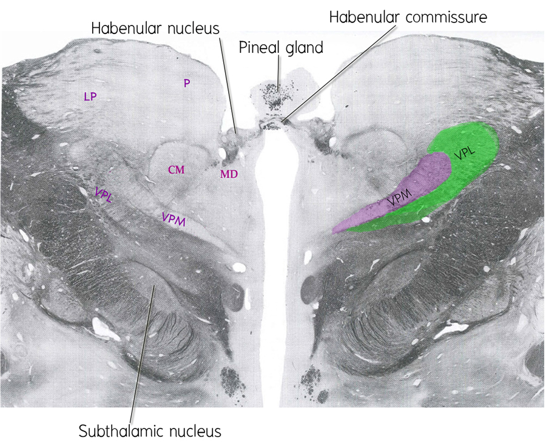

Forebrain functional levels
ศึกษาจาก Haines’ atlas of neuroanatomy

* Cerebral hemisphere ตัดผ่าน corpus callosum, lateral ventricles และ caudate and lentiform nuclei
* Diencephalon ตัดผ่าน
- Thalamus เห็น nuclei ที่สำคัญดังนี้ centromedial (CM) nucleus, ventral posteromedial (VPM) nucleus, ventral posterolateral (VPL) nucleus, medial dorsal (MD) nucleus, lateral posterior (LP) nucleus และ reticular nucleus ที่อยู่ lateral ต่อ external medullary lamina
- Epithalamus พบ habenula และ stria medullaris thalami อยู่บนผนังของ third ventricle ที่อยู่ medial ต่อ dorsal part ของ thalamus